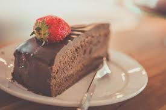

Ingredienser
Kage
- 150g. Smør
- 250g Mel
- 300g Sukker
- 2,5 dl Vand
- 1 tsk. Bagepulver
- 2 stk. Æg
- 1 tsk. Natron
- 6 spsk kakaopulver
Glasur
- 200g Flormelis
- 3 spsk. Kakaopulver
- 2 spsk. Smør
- 30-40ml. Mælk

Sådan gør du
- Tænd ovnen på 170 grader varmluft.
-
Rør blødgjort smør og sukker sammen med en håndmixer, til det er
hvidt og skummende.
- Tilsæt æggene et af gangen, så de bliver mixet godt sammen.
-
Tilsæt de øvrige ingredienser og rør med en håndmixer i 2-3
minutter, til dejen er helt jævn.
-
Hæld chokoladekagedejen op i et ildfast fad eller mindre bradepande,
smurt eller beklædt med bagepapir.
-
Bag chokoladekagen på midterste rille i ovnen i ca. 35 minutter.
- Når kagen er færdigbagt, skal den køles af.
-
Glasur: Kakao, flormelis, blødt smør og lun mælk blandes, så den er
tyk og smøres på når kagen er kold.